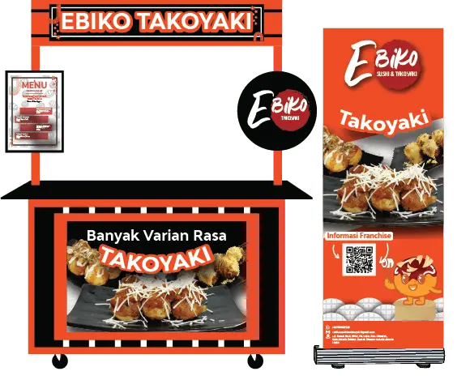

Ebiko berdiri sejak Januari 2016, dalam sebuah kios yang terletak
di Alfamidi Karang Tengah, Jakarta Selatan.Berkat dukungan dari loyal
customer Ebiko, alhamdulillahkami telah berkembang menjadi sebuah
One Stop Solution Virtual Resto
Kenapa harus Memilih Ini?
MANAJEMEN YANG TERSTRUKTUR & BISNIS YANG SIAP
BEROPERASI
PRODUK SUDAH DIKENAL DAN MEMILIKI CIRI KHAS TERSENDIRI
MANAJEMEN PEMESANAN BAHAN BAKU DAN KEUANGAN
LEBIH MUDAH
Partnership
Dalam Menjalankan bisnis franchise, kami telah menjalin kerjasama
dengan beberapa perusahaan e-commarce
Konsep Dine-in
FULL Package
Majoo POS System Software + Standing Barcket
Web Order & Majoo Set Up
Bahan Baku, Packaging, Set peralatan lengkap (Sushi, takoyaki, Okonomiyaki)
Branding Outlet
Free Pedaftaran Online App
(Grabfood, Gofood, dan Shopeefood)
Dokumentasi Video Opening & Edited Content
Visit Lokasi & Training
Buku Menu sebanyak 2 set
Main Biliboard
45Jt
Lite Package Sushi Only
Majoo POS System Software + Standing Barcket
Web Order & Majoo Set Up
Bahan Baku, Packaging, Set peralatan lengkap (Sushi Only)
Branding Outlet
Free Pedaftaran Online App
(Grabfood, Gofood, dan Shopeefood)
Dokumentasi Video Opening & Edited Content
Visit Lokasi & Training
Buku Menu sebanyak 2 set
Main Biliboard
27Jt
Lite Package Takoyaki dan okonomiyaki
Majoo POS System Software + Standing Barcket
Web Order & Majoo Set Up
Bahan Baku, Packaging, Set peralatan lengkap (Takoyaki dan Okonomiyaki)
Branding Outlet
Free Pedaftaran Online App
(Grabfood, Gofood, dan Shopeefood)
Dokumentasi Video Opening & Edited Content
Visit Lokasi & Training
Buku Menu sebanyak 2 set
Main Biliboard
27Jt
Konsep Booth

PAKET GOLD
Booth Jati Belanda
Peralatan Siap Jual
Bahan Baku Takoyaki
Box Kemasan
SOP Pembuatan
Sarana Promosi
Seragam Karyawan
PAKET PLATINUM
Booth Jati Belanda
Peralatan Siap Jual
Bahan Baku Tako dan Oko
Box Kemasan
SOP Pembuatan
Sarana Promosi
Seragam Karyawan
Sertifikat Halal MUI
Syarat Menjadi Mitra
Ebiko Sushi Dan Takoyaki
Wajib membeli bahan baku (tepung premix takoyaki &
okonomiyaki,macam-macam saos) yang disediakan
oleh Kantor Pusat
Bersedia mengikuti petunjuk dan pelatihan yang
diberikan oleh manajemen kantor pusat
Selama menjadi Mitra, manajemen Kantor Pusat
hanya meminjamkan Merk Dagang yaitu
“Ebiko Sushi dan Takoyaki”
Dilarang membuka usaha sejenis dengan
Ebiko Sushi dan Takoyaki
Dilarang menjual menu lain atau produk tanpa
seizin Kantor Pusat
Dikelola langsung oleh partner, hanya akan ada
pembagian komisi Rp500/item